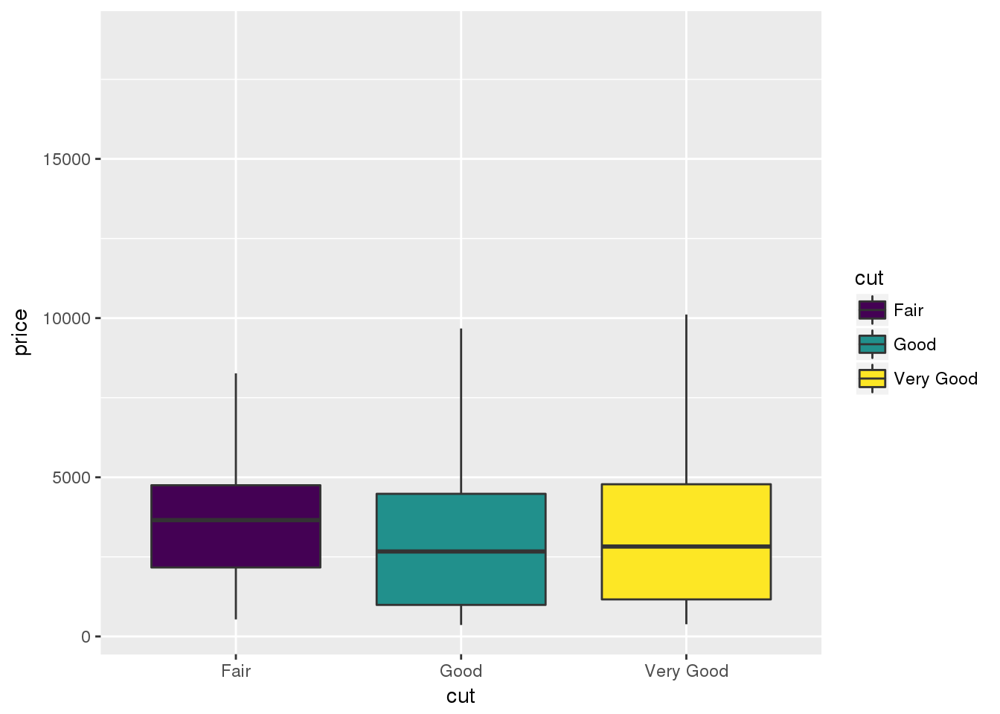
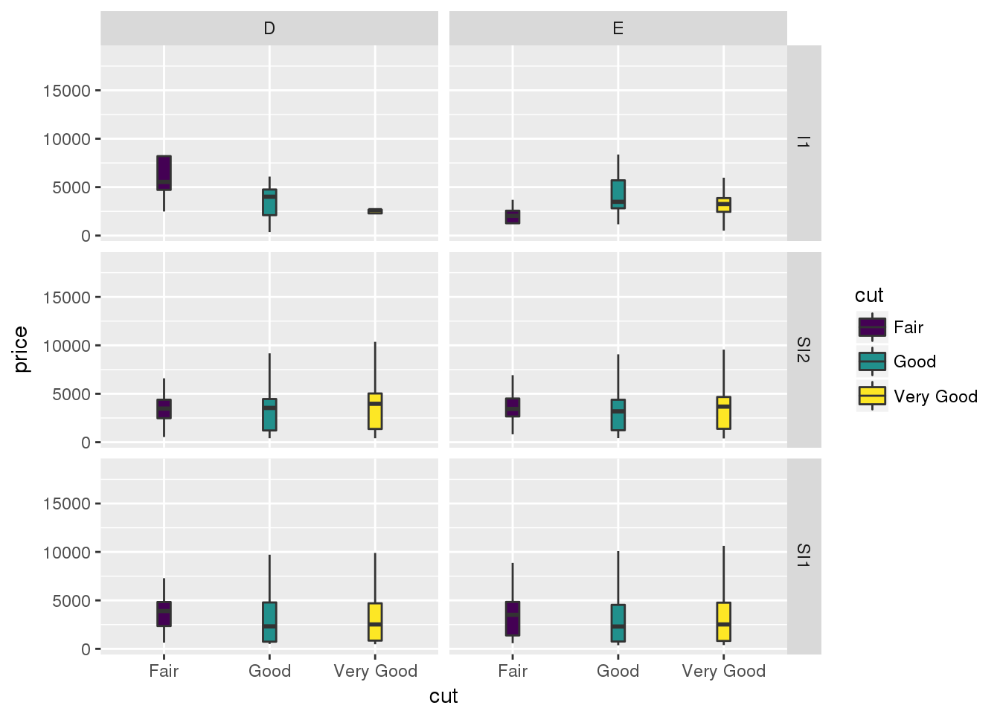

diamonds %>% str()## Classes 'tbl_df', 'tbl' and 'data.frame': 53940 obs. of 10 variables:
## $ carat : num 0.23 0.21 0.23 0.29 0.31 0.24 0.24 0.26 0.22 0.23 ...
## $ cut : Ord.factor w/ 5 levels "Fair"<"Good"<..: 5 4 2 4 2 3 3 3 1 3 ...
## $ color : Ord.factor w/ 7 levels "D"<"E"<"F"<"G"<..: 2 2 2 6 7 7 6 5 2 5 ...
## $ clarity: Ord.factor w/ 8 levels "I1"<"SI2"<"SI1"<..: 2 3 5 4 2 6 7 3 4 5 ...
## $ depth : num 61.5 59.8 56.9 62.4 63.3 62.8 62.3 61.9 65.1 59.4 ...
## $ table : num 55 61 65 58 58 57 57 55 61 61 ...
## $ price : int 326 326 327 334 335 336 336 337 337 338 ...
## $ x : num 3.95 3.89 4.05 4.2 4.34 3.94 3.95 4.07 3.87 4 ...
## $ y : num 3.98 3.84 4.07 4.23 4.35 3.96 3.98 4.11 3.78 4.05 ...
## $ z : num 2.43 2.31 2.31 2.63 2.75 2.48 2.47 2.53 2.49 2.39 ...Nice fat boxplots.
diamonds %>%
filter(as.numeric(cut) <= 3,
as.numeric(clarity) <= 3,
as.numeric(color) < 3) %>%
ggplot(aes(x=cut, y= price, fill = cut)) +
geom_boxplot(outlier.shape = NA)
Weird skinny boxplots when adding the facet_grid().
diamonds %>%
filter(as.numeric(cut) <= 3,
as.numeric(clarity) <= 3,
as.numeric(color) < 3) %>%
ggplot(aes(x=cut, y= price, fill = cut)) +
geom_boxplot(outlier.shape = NA) +
facet_grid(clarity ~ color)
devtools::session_info()
## Session info --------------------------------------------------------------
## setting value
## version R version 3.3.2 (2016-10-31)
## system x86_64, linux-gnu
## ui X11
## language (EN)
## collate en_US.UTF-8
## tz America/New_York
## date 2018-01-18
## Packages ------------------------------------------------------------------
## package * version date source
## assertthat 0.2.0 2017-04-11 cran (@0.2.0)
## backports 1.1.2 2017-12-13 cran (@1.1.2)
## bindr 0.1 2016-11-13 cran (@0.1)
## bindrcpp * 0.2 2017-06-17 CRAN (R 3.3.2)
## blogdown 0.4 2017-12-12 CRAN (R 3.3.2)
## bookdown 0.5 2017-08-20 CRAN (R 3.3.2)
## broom 0.4.2 2017-02-13 CRAN (R 3.3.2)
## cellranger 1.1.0 2016-07-27 CRAN (R 3.3.2)
## cli 1.0.0 2017-11-05 CRAN (R 3.3.2)
## colorspace 1.3-2 2016-12-14 CRAN (R 3.3.2)
## crayon 1.3.4 2017-09-16 CRAN (R 3.3.2)
## devtools 1.12.0 2016-12-05 CRAN (R 3.3.2)
## digest 0.6.13 2017-12-14 cran (@0.6.13)
## dplyr * 0.7.4 2017-09-28 CRAN (R 3.3.2)
## evaluate 0.10.1 2017-06-24 cran (@0.10.1)
## forcats * 0.2.0 2017-01-23 CRAN (R 3.3.2)
## foreign 0.8-67 2016-09-13 CRAN (R 3.3.2)
## ggplot2 * 2.2.1.9000 2017-11-14 Github (tidyverse/ggplot2@41f154f)
## glue 1.2.0 2017-10-29 CRAN (R 3.3.2)
## gtable 0.2.0 2016-02-26 CRAN (R 3.3.2)
## haven 1.1.0 2017-07-09 CRAN (R 3.3.2)
## hms 0.3 2016-11-22 CRAN (R 3.3.2)
## htmltools 0.3.6 2017-04-28 cran (@0.3.6)
## httr 1.3.1 2017-08-20 CRAN (R 3.3.2)
## jsonlite 1.5 2017-06-01 cran (@1.5)
## knitr 1.18 2017-12-27 cran (@1.18)
## labeling 0.3 2014-08-23 CRAN (R 3.3.2)
## lattice 0.20-35 2017-03-25 CRAN (R 3.3.2)
## lazyeval 0.2.1 2017-10-29 cran (@0.2.1)
## lubridate 1.7.1 2017-11-03 CRAN (R 3.3.2)
## magrittr 1.5 2014-11-22 CRAN (R 3.3.2)
## memoise 1.0.0 2016-01-29 CRAN (R 3.3.2)
## mnormt 1.5-5 2016-10-15 CRAN (R 3.3.2)
## modelr 0.1.1 2017-07-24 CRAN (R 3.3.2)
## munsell 0.4.3 2016-02-13 CRAN (R 3.3.2)
## nlme 3.1-131 2017-02-06 CRAN (R 3.3.2)
## pkgconfig 2.0.1 2017-03-21 cran (@2.0.1)
## plyr 1.8.4 2016-06-08 CRAN (R 3.3.2)
## psych 1.6.12 2017-01-08 CRAN (R 3.3.2)
## purrr * 0.2.4 2017-10-18 CRAN (R 3.3.2)
## R6 2.2.2 2017-06-17 cran (@2.2.2)
## Rcpp 0.12.13 2017-09-28 cran (@0.12.13)
## readr * 1.1.1 2017-05-16 CRAN (R 3.3.2)
## readxl 1.0.0 2017-04-18 CRAN (R 3.3.2)
## reshape2 1.4.2 2016-10-22 CRAN (R 3.3.2)
## rlang 0.1.6 2017-12-21 cran (@0.1.6)
## rmarkdown 1.8 2017-11-17 cran (@1.8)
## rprojroot 1.3-2 2018-01-03 cran (@1.3-2)
## rstudioapi 0.7 2017-09-07 cran (@0.7)
## rvest 0.3.2 2016-06-17 CRAN (R 3.3.2)
## scales 0.5.0.9000 2017-10-09 Github (hadley/scales@d767915)
## stringi 1.1.5 2017-04-07 cran (@1.1.5)
## stringr * 1.2.0 2017-02-18 CRAN (R 3.3.2)
## tibble * 1.3.4 2017-08-22 cran (@1.3.4)
## tidyr * 0.7.2 2017-10-16 CRAN (R 3.3.2)
## tidyverse * 1.2.1 2017-11-14 CRAN (R 3.3.2)
## viridisLite 0.2.0 2017-03-24 cran (@0.2.0)
## withr 2.1.1.9000 2018-01-08 Github (jimhester/withr@df18523)
## xml2 1.1.1 2017-01-24 CRAN (R 3.3.2)
## yaml 2.1.16 2017-12-12 cran (@2.1.16)